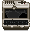
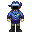
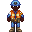
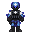
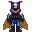
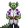
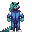

Cepheus-class Mech Carrier

|  | Removed
This ship has been completely removed from the game files. |
| Short Name: | Cepheus-class |
| Manufacturer: | Unknown |
| Faction: | Unspecified (Prefix: CMSV) |
| Crew Size: | 10 |
| Size: | Medium |
| Tags: | Robotics |
| Buyable: | Yes |
The Cepheus is the go-to for the CMM whenever it wishes to deploy vessels capable of creating anything in the realm robotica. These vessels are deployed to sectors full of scrap and salvageable material, stocked with armament for their salvagers and a mechanical laboratory for their mechanical engineers. Crews on Cepheus ships are typically treated to somewhat crammed together quarters and tight schedules of collection and production.
| Preview | Name | Officer | Slots |
|---|---|---|---|
|  | Captain | Yes | 1 |
|  | Mechanic | No | 1 |
|  | Minuteman | No | 2 |
|  | Mech Pilot | No | 2 |
|  | Roboticist | No | 1 |
|  | Cadet | No | 3 |
"You ever seen a mech pilot flinch when they're tanking rounds in those things? 'Course not, that's what makes them good, level-headed, icy-veined pilots. Now, when a pilot takes a punch outside his ride and doesn't flinch? That's how you know he's a Minuteman."
— CMM Mech Lieutenant Lazar Grier, attempting to pick up chicks.
Introduction
A specialized robotics ship for the Colonial Minutemen, the Cepheus-class excels at getting you into the mech combat game quickly with minimal setup, as well as providing ample facilities to modify, maintain, and manufacture new mechs. Begins with the CMM APLU-Mk-IV "Rogue", a recolored Ripley that can be outfitted with various equipment around the mech hangar. While the Rogue cannot equip the FNX-99 "Hades" carbine the ship spawns with, the ship features research equipment that will allow you to expand your mech arsenal in good time.
The Cepheus-class is also well-stocked for security play, featuring two lockers of low-threat security equipment and a prisoner holding cell. An armory is also provided, with three combat hardsuits, ballistic armor closet, additional gun locker (featuring the CM-15 automatic shotgun), and boarding tools for breaching into and controlling an environment; more than enough to transform your crew into ample fire support for your mechanized friend.
Engineers will also not be disappointed, as the aft nacelles of the ship comprises a large engineering section. The port nacelle includes a pipe dispenser, two softsuits, two pairs of magboots, and a trust fire axe, as well as a monitoring console for the ship's power supply and draw. The starboard nacelle houses two PACMAN units connected to a twin SMES system, as well as a large amount of generic engineering equipment.
The core of the ship is home to its central hallway, which splits into the fairly-expansive dormitory area, mess hall, and kitchen. Various basic ingredients have been provided to provision for your troops, and a Booze-O-Mat ensures that the after-action debriefing does not get too dry and dreary. Directly aft of the primary hallway is the cargo bay, with its (nonfunctional) bounty console, mining equipment locker, science and medical crates (including a T2 parts box for early upgrades) and trash cart.
Things of note:
- Roundstart Ripley with clamps and other equipment
- Well-rounded security loadout good for backing up your mech in combat
- Fairly compact; can be traversed aft to nose in a matter of seconds
- More than enough equipment for its crew size
- One of the most approachable CMM ships, though fairly specialized
Roles
| Icon | Name | Type | Slots |
|---|---|---|---|
| Captain | Captain | 1 | |
| Mechanic | Ship Engineer | 1 | |
| Minuteman | Security Officer | 2 | |
| Mech Pilot | Unique Role | 2 | |
| Roboticist | Roboticist | 1 | |
| Cadet | Assistant | 3 |
Gameplay
As a Captain:
As with all Colonial Minutemen ships, organization of the crew is key. Make use of the wide central corridor and mess to provide briefings and organize crew for roll call. Good communication makes you look organized and professional, and keeps conflicts under control.
When deciding what you're doing in the sector, keep your equipment in mind; you are uniquely positioned to create, arm, deploy, and support mechs faster and better than most research ships capable of the same thing. If you feel like interacting with other crews, you are well-equipped to serve as fire support for friendly Independent ships operating in dangerous places; keep the peace by launching armed patrols around the sector's popular planets; or organize a show of Colonial Minutemen force by arranging a parade and inviting others to watch flex your might. If there are other Colonial Minutemen ships in the sector, you may wish to conduct joint operations or training as well.
If you feel like interacting solely with your own crew, this is a great chance to let people get hands-on with SS13's mech mechanics in a constructive environment. Drill your troops by practicing mech and infantry maneuvers on various ruins and planets; arrange a mech brawl to train your pilots in the finer points of Rock'em Sock'em Robots, or test out interesting new mech loadouts as part of a combat research initiative.
Your ship is equipped with enough gear to give everyone a role, and with good organizing you can ensure everyone has the chance to be part of the team.
As a Crewmember:
The Cepheus-class, despite being relatively small, can house a whole 10 people. This can quickly devolve into a messy madhouse if you aren't organized. Remember that constructive play is at its best when people aren't off doing their own thing; listen carefully to your Captain and their plans for you will be that much better. Being part of the team is what it's all about, so look to assist your fellow crew and try to keep the damn ship clean. As a member of the Colonial Minutemen, your Captain is fully allowed to pull rank. Obviously egregious abuses of power warrant reconsideration, but you should be happy to swab the deck, load the magazines, and perform other tasks that might not be to your preference. In a fight, your commanding officer's orders come before your better judgement. Such is the life of a Minuteman. Oorah!